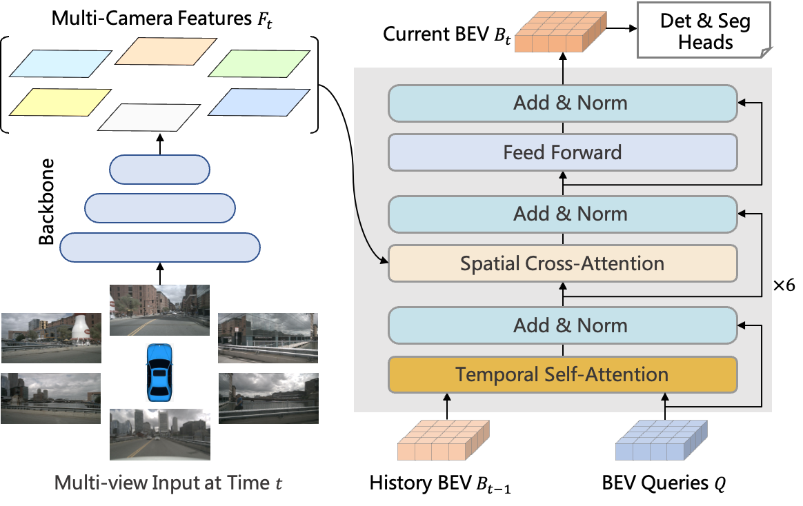

Recent Works ([Full List])
(* Equal contribution, † Interns, # Corresponding authors)InternImage: Exploring Large-Scale Vision Foundation Models with Deformable Convolutions
Wenhai Wang*, Jifeng Dai*, Zhe Chen*†, Zhenhang Huang* Zhiqi Li*†, Xizhou Zhu*, Xiaowei Hu, Tong Lu, Lewei Lu, Hongsheng Li, Xiaogang Wang, Yu Qiao#
arXiv, 2022
[Paper] [Code] Star [BibTex]
A strong large-scale CNN-based fondamention model.


Wenhai Wang*, Jifeng Dai*, Zhe Chen*†, Zhenhang Huang* Zhiqi Li*†, Xizhou Zhu*, Xiaowei Hu, Tong Lu, Lewei Lu, Hongsheng Li, Xiaogang Wang, Yu Qiao#
arXiv, 2022
[Paper] [Code] Star [BibTex]

BEVFormer: Learning Bird’s-Eye-View Representation from Multi-Camera Images via
Spatiotemporal Transformers
Zhiqi Li*†, Wenhai Wang*, Hongyang Li*, Enze Xie, Chonghao Sima, Tong Lu, Yu Qiao, Jifeng Dai#
ECCV, 2022
[Paper] [Code] Star [BibTex]
A versatile camera-only framework for autonomous driving perception, e.g., 3D object
detection and semantic map segmentation.
Zhiqi Li*†, Wenhai Wang*, Hongyang Li*, Enze Xie, Chonghao Sima, Tong Lu, Yu Qiao, Jifeng Dai#
ECCV, 2022
[Paper] [Code] Star [BibTex]